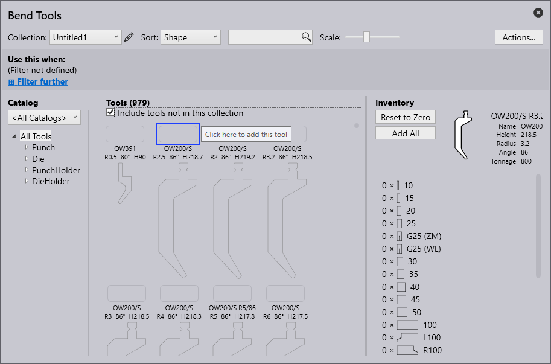

折弯模具
折弯模具创建中使用的术语如下所述：
| S.No | 术语 | 含义 |
|---|---|---|
1 |
模具列表 |
可以在此处选择要使用的模具列表。新的模具列表可以使用新建选项创建。 |
2 |
排序 |
可以根据此处的特定标准对模具进行排序（高度、名称、形状、半径、角度、下模宽度、优先级、模具管理）。 |
3 |
查找 |
可以使用搜索栏搜索模具。例如，在这里可以对模具的名称进行字母搜索。此外，还可以提出更复杂的搜索请求。搜索请求将查找名称中带有UT或EV的所有模具，同时也符合以下条件：角度≤ 30，高度≥ 140，高度≤ 220，半径= 1。 |
4 |
缩放 |
模具视图的大小可以使用滑块进行更改。 |
5 |
操作 |
可以执行以下操作： - A 添加目录：添加不同类型的机床。 - B 新模具列表：创建新的模具集合。 - C 克隆模具列表：克隆创建的模具集合。 - D 导出模具列表：当前模具列表可以导出为“.btools”文件。 - E 导入模具列表：模具列表可以导入为“.btools”。 - F 从ARV导入：模具可以从ARV文件导入，然后将这些模具自定义归档到模具目录（如果事先不可用，将创建目录）。 - G 从DXF导入：模具可以从DXF文件导入。将这些模具自定义归档到模具目录（如果事先不可用，将创建目录）。 - H 重置模具列表：将模具列表还原为默认状态。 - I 取消：关闭“操作…” 窗口。 |
6 |
模具管理 |
显示所选模具的概述。可以执行以下操作： - 重置为零：所选模具的总库存已从当前模具列表中删除。-添加一组：仅将一组所选模具添加到当前列表中。-添加长度：添加模具长度 - 全部添加：所选模具的完整库存被载入至当前模具列表中。库存在<所有模具>模具列表中定义。 - 保存：保存应用的更改。 |
7 |
模具库存 |
显示所选模具的库存。鼠标左键单击可添加段。 |
8 |
无库存的模具 |
没有库存的模具未包含在当前模具列表中。通过点击空白字段，将添加模具的标准库存，模具被并入当前模具列表中。 |
9 |
优先级 |
根据用户指定的优先级，选择模具。1 =高优先级模具 5 =低优先级模具 |
10 |
模具显示区域 |
在模具显示区域中，将显示所选模具列表中的所有模具。通过复选框“包括无库存的模具”，无库存的模具也可以显示。 |
11 |
模具过滤器 |
在这里，当前模具列表的模具根据它们的类型和形状显示结构。在此结构中选择一个图素可启用过滤。 |
12 |
目录 |
由此可选择已安装的众多模具目录之一（包括通快、自定义等）。 |
13 |
过滤条件 |
当前模具列表的过滤条件，由自动装备器自动使用。这可用于命名的模具列表，但不适用于特殊列表<所有模具>。可以根据各个方面进行过滤，包括机床、材料、板材厚度等。 |
创建模具列表
-
要创建新的模具列表，请单击操作按钮并选择新建模具列表。

-
通过单击编辑图标重命名模具列表。

-
默认情况下，新模具列表显示所有模具，包括上模、下模、上模支架和下模支架，但未添加到库存中。请确保包括此集合中未包含的模具复选框被选中。

-
要添加模具，请单击模具名称上方的方框，单击 ctrl+enter键可移除模具。


-
使用此于选项允许用户根据不同标准过滤和设置新列表的规则。
-
单击保存将此模具列表添加到集合。
为模具列表添加规则
单击过滤器更多选项以应用来自不同过滤条件的规则。
-
机床 - 指用于折弯操作的机床。
-
材料 - 表示被折弯的物质的类型。
-
厚度 - 表示被折弯材料的厚度。
-
半径 - 指折弯的曲率。
-
表面 - 描述材料的外部纹理或表面处理。
-
处理 - 描述应用于材料的任何预折弯或再折弯工艺，例如热处理、涂层或镀锌。
-
薄膜 - 指涂抹在材料上的保护层或功能层。
-
标签 - 分配给分类、过滤和组织图素的自定义标签，以便于识别。
| 模具列表必须至少有一个过滤条件才能保存（否则，此模具列表将用于每个零件）。 |

下图显示了用于创建规则的示例条件：
| 当多个模具列表与特定加工要求匹配时，将使用最具体匹配的模具列表。 |